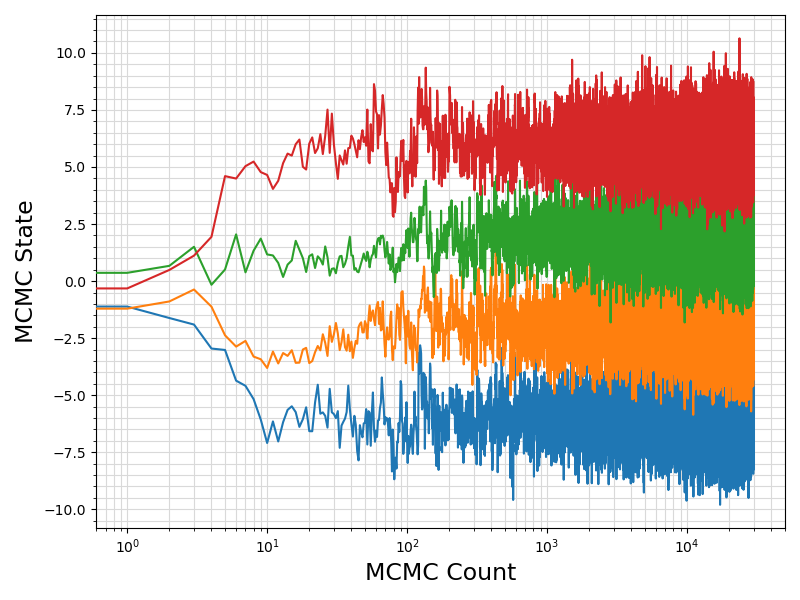
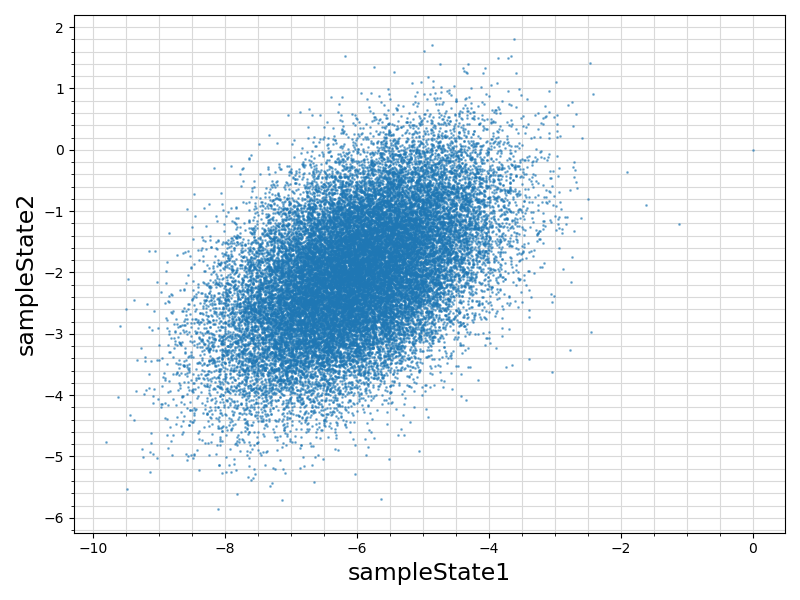
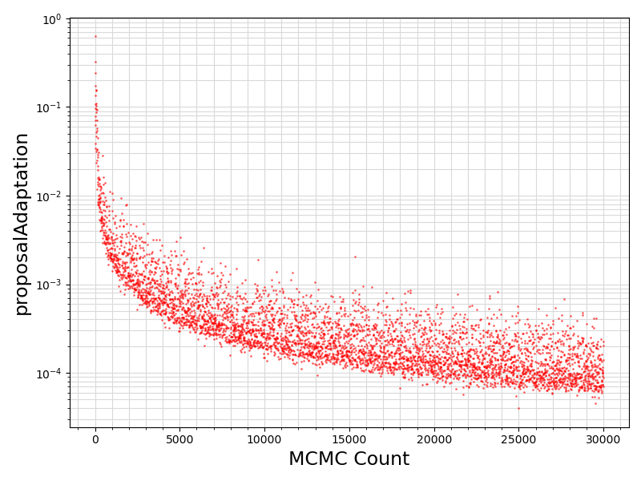

C-Fortran Interoperation
Generate and return a non-zero value (1) if the procedure fails to fully accomplish the task of Monte Carlo sampling of the specified input mathematical objective function, otherwise, return 0.
See the documentation of getErrSampling for example usage in Fortran programming language.
This interface group is the entry point to all C-style interfaces to the ParaDRAM samplers of mathematical density functions.
Although the procedures of this generic interface return a single scalar of type int32_t, the procedures generate massive amounts of information about each simulation which are stored in appropriate external hard drive files.
See,
-
this generic documentation page for more information on the generated output files for samplings performed using the ParaDRAM sampler.
- Parameters
-
| [in] | getLogFunc | : The input user-specified procedure pointer to the natural logarithm of the target density function.
On input, the function must take an input vector state of size ndim of floating-point type of kind float, double, or long double representing a state (point) from within the domain of the user-specified target density function whose function value must be returned.
On output, the user-specified procedure getLogFunc() must return the function value corresponding to the input state[ndim].
The following illustrate the generic interface of input function pointer getLogFunc(state, ndim), REAL getLogFunc(REAL[] state, int32_t ndim);
REAL can be a floating-point type of kind float, double, or long double for the corresponding varying-precision sampler interfaces:
-
runParaDRAMF,
-
runParaDRAMD,
-
runParaDRAML.
|
| [in] | ndim | : The input scalar constant of type int32_t representing the number of dimensions of the domain of the objective function. |
| [in] | input | : The input scalar pointer of type char representing the null-terminated C string that contains either,
-
the path to an external input file containing the namelist group of ParaDRAM sampler specifications as outlined in the corresponding page of ParaMonte library generic documentation website.
-
the namelist group of ParaDRAM sampler specifications as the can appear in an external input specification file.
While all input simulation specifications are optional, it is highly recommended to pay attention to the default settings of the domain boundaries and sampler starting point.
(optional. It is considered as missing if set to null().) |
- Returns
stat : The output scalar of type int32_t that is 0 if and only if the sampler succeeds in sampling the specified density function.
Possible calling interfaces ⛓
stat = runParaDRAMF(getLogFunc, ndim, input)
stat = runParaDRAMD(getLogFunc, ndim, input)
stat = runParaDRAML(getLogFunc, ndim, input)
- Warning
- Beware that the definition of extended precision real type
long double is compiler and platform dependent.
This makes the use of long double with precompiled ParaMonte libraries problematic and non-functional.
-
The condition
0 < ndim must hold for the corresponding input arguments.
This condition is verified only if the library is built with the preprocessor macro CHECK_ENABLED=1.
Example usage ⛓
2 use iso_c_binding, only: SK => c_char, IK => c_int32_t, RKG => c_double
4 integer(IK) , parameter :: NDIM = 4_IK
5 real(RKG) , parameter :: MEAN(NDIM) = [ -6, -2, 2, 6]
6 real(RKG) , parameter :: LOG_INVERSE_SQRT_TWO_PI = log( 1./sqrt( 2.*acos( -1.)))
7 real(RKG) , parameter :: COVMAT(NDIM, NDIM) = reshape([ +1.0, +0.5, +0.5, +0.5 &
8 , +0.5, +1.0, +0.5, +0.5 &
9 , +0.5, +0.5, +1.0, +0.5 &
10 , +0.5, +0.5, +0.5, +1.0 ], shape(COVMAT))
11 real(RKG) , parameter :: INVCOV(NDIM, NDIM) = reshape([ +1.6, -0.4, -0.4, -0.4 &
12 , -0.4, +1.6, -0.4, -0.4 &
13 , -0.4, -0.4, +1.6, -0.4 &
14 , -0.4, -0.4, -0.4, +1.6 ], shape(INVCOV))
15 real(RKG) , parameter :: MVN_COEF = NDIM * LOG_INVERSE_SQRT_TWO_PI + 0.581575404902840
17 function getLogFunc(state, ndim) result(logFunc) bind(C)
20 integer(IK), value :: ndim
21 real(RKG), intent(in) :: state(ndim)
22 real(RKG) :: stateNormed( size(state))
24 stateNormed = state - MEAN
25 logFunc = MVN_COEF - 0.5_RKG * ( dot_product(stateNormed, matmul(INVCOV, stateNormed)))
31 use iso_c_binding, only: c_funloc, c_null_char
32 use logfunc, only: SK, IK, RKG, NDIM, getLogFunc
33 character( len( c_null_char), SK), parameter :: NUL = c_null_char
35 stat = runParaDRAMD( c_funloc(getLogFunc), NDIM, SK_ "¶dram outputFileName = './out/runParaDRAM', outputStatus = 'retry', outputChainSize = 30000 /"//NUL)
36 if (stat /= 0) error stop "sampler failed."
This module contains procedures and generic interfaces for the ParaMonte library sampler routines. integer(IK) function runParaDRAMD(getLogFunc, ndim, input)
Example Unix compile command via Intel ifort compiler ⛓
3ifort -fpp -standard-semantics -O3 -Wl,-rpath,../../../lib -I../../../inc main.F90 ../../../lib/libparamonte* -o main.exe
Example Windows Batch compile command via Intel ifort compiler ⛓
2set PATH=..\..\..\lib;%PATH%
3ifort /fpp /standard-semantics /O3 /I:..\..\..\include main.F90 ..\..\..\lib\libparamonte*.lib /exe:main.exe
Example Unix / MinGW compile command via GNU gfortran compiler ⛓
3gfortran -cpp -ffree-line-length-none -O3 -Wl,-rpath,../../../lib -I../../../inc main.F90 ../../../lib/libparamonte* -o main.exe
Postprocessing of the example output ⛓
3import matplotlib.pyplot as plt
10funcname = os.path.basename(os.getcwd())
14files = glob.glob( "./out/*_chain.txt")
18 df = pd.read_csv(file, delimiter = ",")
19 sindex = list(df.columns).index( "sampleLogFunc") + 1
24 fig = plt.figure(figsize = (8, 6))
25 ax = plt.subplot(1,1,1)
26 ax.plot ( range(len(df.values[:, 0]))
27 , df.values[:, sindex:]
32 ax.set_xlabel( "MCMC Count", fontsize = 17)
33 ax.set_ylabel( "MCMC State", fontsize = 17)
34 ax.tick_params(axis = "x", which = "minor")
35 ax.tick_params(axis = "y", which = "minor")
36 plt.grid(visible = True, which = "both", axis = "both", color = "0.85", linestyle = "-")
39 plt.savefig(funcname + ".traceplot.png")
43 if len(df.values[1, sindex:]) > 1:
45 fig = plt.figure(figsize = (8, 6))
46 ax = plt.subplot(1,1,1)
47 ax.scatter ( df.values[:, sindex]
48 , df.values[:, sindex + 1]
55 ax.set_xlabel(df.columns.values[sindex], fontsize = 17)
56 ax.set_ylabel(df.columns.values[sindex + 1], fontsize = 17)
57 ax.tick_params(axis = "x", which = "minor")
58 ax.tick_params(axis = "y", which = "minor")
59 plt.grid(visible = True, which = "both", axis = "both", color = "0.85", linestyle = "-")
62 plt.savefig(funcname + ".scatterplot.png")
67 if "proposalAdaptation" in df.columns.values:
68 if any(df[ "proposalAdaptation"].values != 0):
69 fig = plt.figure(figsize = (8, 6))
70 ax = plt.subplot(1,1,1)
71 ax.scatter ( range(len(df.values[:, 0]))
72 , df[ "proposalAdaptation"].values
81 ax.set_xlabel( "MCMC Count", fontsize = 17)
82 ax.set_ylabel( "proposalAdaptation", fontsize = 17)
83 ax.tick_params(axis = "x", which = "minor")
84 ax.tick_params(axis = "y", which = "minor")
85 plt.grid(visible = True, which = "both", axis = "both", color = "0.85", linestyle = "-")
88 plt.savefig(funcname + ".proposalAdaptation.png")
Visualization of the example output ⛓



- Test:
- test_pm_sampling
- Bug:
Status: Unresolved
Source: Intel LLVM Fortran Compiler ifx version 2024.0.0 20231017
Description: Intel LLVM Fortran Compiler ifx This interface yields a segmentation fault error for all real types supported when linked with the ParaMonte library built with Intel LLVM Fortran Compiler ifx.
Remedy (as of ParaMonte Library version 2.0.0): For now, only Intel Classic Fortran Compiler ifort will be used.
- Bug:
Status: Unresolved
Source: Intel Classic Fortran Compiler ifort version 2021.11.0 20231010
Description: The runParaDRAML interface for long double yields a segmentation fault error.
Remedy (as of ParaMonte Library version 2.0.0): None as of today.
- Todo:
- Critical Priority: The current tests for
long double interface fail with Intel LLVM Fortran Compiler ifx and Intel LLVM C/C++ Compiler icx compilers.
Apparently, there is a mismatch between long double and c_long_double storage.
This issue does not exist with GNU compilers, although the GNU definition of long double appears to yield incorrect values in some calculations, e.g., in isFailedGeomCyclicFit() of the ParaMonte library.
Final Remarks ⛓
If you believe this algorithm or its documentation can be improved, we appreciate your contribution and help to edit this page's documentation and source file on GitHub.
For details on the naming abbreviations, see this page.
For details on the naming conventions, see this page.
This software is distributed under the MIT license with additional terms outlined below.
-
If you use any parts or concepts from this library to any extent, please acknowledge the usage by citing the relevant publications of the ParaMonte library.
-
If you regenerate any parts/ideas from this library in a programming environment other than those currently supported by this ParaMonte library (i.e., other than C, C++, Fortran, MATLAB, Python, R), please also ask the end users to cite this original ParaMonte library.
This software is available to the public under a highly permissive license.
Help us justify its continued development and maintenance by acknowledging its benefit to society, distributing it, and contributing to it.
- Copyright
- Computational Data Science Lab
- Author:
- Amir Shahmoradi, May 16 2016, 9:03 AM, Oden Institute for Computational Engineering and Sciences (ICES), UT Austin
|